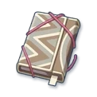
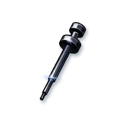
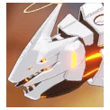

ブルアカの計算を、ブラウザだけで。
先生レベル、募集の天井、装備の周回、対抗戦の順位。ブルアカで手が止まりがちな計算を、ここにまとめてあります。
先生レベル、募集の天井、装備の周回、対抗戦の順位。ブルアカで手が止まりがちな計算を、ここにまとめてあります。
βまだテスト中です。 おかしなところ・ほしい機能は、各ツールの下の「このツールへの要望・不具合」から。 これまでに届いたものも見られます。
目標のレベルまで、あと何 AP・何日か。経験値 2 倍の期間にも対応。
つかうレポートと強化珠、今日はどちらを回る日か。手持ちが何人ぶんかを数えます。
つかう1 人を今から目標まで育てるのに要るクレジットと素材。
つかう
このオーパーツは誰が使うのか。素材から生徒を引きます。
つかうその生徒に効く贈り物と、目標のランクまでの個数・日数。
つかう今の星から目標まで、要る神名文字とクレジット。伸び幅も一緒に。
つかう贈り物を選ぶと、×4 で効く生徒が顔つきで並びます。
つかう潜在能力を目標まで上げるのに要るオーパーツとクレジット。
つかうどこにスケジュールを送ると絆経験値と神名文字がいちばん多いか。
つかう設計図の枚数を入れると、次に回る任務ステージが 1 本に絞られます。
つかう部位ごとに T1〜T10 で何がどれだけ伸びるか。愛用品と固有武器も。
つかう
固有武器を目標まで上げるのに要る経験値・神名文字・クレジット。
つかう装備を目標のレベルまで上げるのに、強化珠が何個要るか。
つかう快適度から、1 時間あたりのクレジットと AP、倉庫が満杯になる時間。
つかうカフェの床と壁に家具を並べて、置けるかと快適度の合計を確かめます。
つかうボスを絵から選ぶと、その相手の TL・有効な属性・連れて行く生徒が出ます。
つかうこの編成なら、その EX は何秒目に撃てるのか。
つかう
総力戦 93 回と大決戦 38 回の全記録。次はいつごろか。
つかうクリアタイムからスコアを出す。目標スコアからの逆算も。
つかう今の順位から 1 位まで、あと何回勝てばいいか。
つかう順位帯と買うもので、コインが 1 日にどれだけ増減するか。
つかう相手の装甲と地形から、有効な属性と生徒を引きます。
つかう今の石でピックアップを引ける確率と、天井までに要る石。
つかう開けた結果から、残りのマスに何がある確率かを全部数え上げます。
つかう足りない素材を選ぶと、効率のいい周回先が順に並びます。
つかう生徒を並べて自分の Tier 表を作る。画像でも URL でも渡せます。
つかう総力戦・大決戦のボーダーを作っています。ほしいものは各ツールの下の「要望・不具合」から。
計算はブラウザの中だけでやっています。入力した数字が外に出ることはありません。
数字の出どころは各ツールの下に書いてあります。